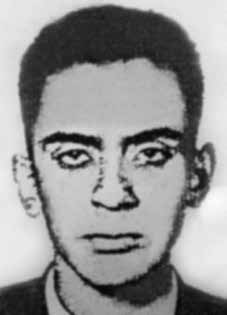

Juan
Antônio
Carrasco
Forrastal
CIRCUNSTÂNCIAS DA MORTE
O irmão de Juan Forrastal, Jorge Forrastal, morava no Conjunto Residencial da USP (CRUSP) e, por consequência, foi preso durante a invasão do CRUSP em 1968. Após a publicação do AI-5, o CRUSP foi ocupado por agentes do Exército e da Aeronáutica, em 17 de dezembro de 1968. Na ocasião, Jorge estava entre os cerca de 800 estudantes detidos. Ao saber da prisão do irmão, Juan Antônio seguiu ao II Exército à sua procura e também acabou preso. Na prisão, arrancaram-lhe a bengala e a prótese que utilizava na perna em razão da hemofilia; os golpes sofridos lhe causaram derrames pelo corpo inteiro. Quando souberam do paradeiro dos filhos, Olga e Antônio Carrasco, que residiam no Brasil, solicitaram auxílio ao consulado boliviano, pois estavam preocupados, especialmente com Juan, que corria risco de morte devido à saúde debilitada. O cônsul boliviano em São Paulo, Alberto Del Caprio, solicitou que o jovem fosse removido para o Hospital das Clínicas, onde permaneceu por curto período, retornando em seguida para a guarda do Exército, no Hospital Militar do Cambuci. Mesmo internado e debilitado, Juan continuou submetido a torturas psicológicas. Tiros disparados na madrugada e ameaça à vida dos seus pais faziam parte da rotina. Transferidos para o Quartel de Quintaúna, os irmãos teriam sofrido tortura, inclusive violência sexual, sob as ordens do coronel Sebastião Alvim. Sobre a torturas, Olga dá detalhes: […] tiraram-lhe a perna ortopédica, ocasionando hematomas generalizados, o que foi agravado pelo fato de ser hemofílico. […] Chegaram a queimar seus órgãos genitais com cigarros acesos. […] No Hospital militar, não somente continuaram as torturas físicas, mas também psicológicas, e ameaças, inclusive com a possibilidade de desaparecimento de seus pais. Libertados poucos dias antes do início do ano letivo de 1969, os irmãos retornaram para casa. Depois desses episódios, Jorge conseguiu continuar os estudos e formou-se em engenharia, passando a trabalhar em Curitiba. Um ano depois, morreu em um acidente automobilístico. Abalado com o abandono dos estudos, a prisão, a tortura sofrida e a morte do irmão, Juan sofria com sucessivas crises e internações. Em depoimento à CEMDP, a amiga da família, Mary Deheza Balderrama, relatou: Não era mais o mesmo. O moço alegre, otimista e confiante, cedera lugar a outro com graves alterações psíquicas, amedrontado com tudo, não podia ver um militar. Mesmo faltando apenas um ano para terminar o curso de Física Nuclear, não queria mais voltar às aulas nem lecionar conforme fazia antes. Nesse período, Juan tentou suicídio ao menos duas vezes. Seus pais o levaram para casa, mas, como não apresentava melhora, foi internado no Hospital Psiquiátrico da Vila Mariana. Depois de ser internado novamente, desta vez no Hospital das Clínicas de São Paulo, Juan foi com a família para Espanha. No dia 28 de outubro de 1972, depois de 12 dias internado no Hospital da Cruz Vermelha em Madri, entrou em delírio e, num momento em que a mãe estava na sala de visitantes, ficou sozinho e desligou todos os aparelhos que o mantinham vivo. Como em tantos outros casos do período, seu suicídio foi uma consequência direta das torturas perpetradas por agentes do Estado.
Juan Forrastal's brother, Jorge Forrastal, lived in the USP Residential Complex (CRUSP) and, as a result, was arrested during the invasion of CRUSP in 1968. After the publication of AI-5, CRUSP was occupied by agents from the Army and Air Force, on December 17, 1968. At the time, Jorge was among around 800 students detained. Upon learning of his brother's arrest, Juan Antônio went to the Second Army in search of him and also ended up arrested. In prison, they took away his cane and the prosthesis he used on his leg due to hemophilia; The blows suffered caused him to have strokes all over his body. When they learned of their children's whereabouts, Olga and Antônio Carrasco, who lived in Brazil, requested help from the Bolivian consulate, as they were worried, especially about Juan, who was at risk of death due to his poor health. The Bolivian consul in São Paulo, Alberto Del Caprio, requested that the young man be removed to the Hospital das Clínicas, where he remained for a short period, before returning to Army custody, at the Cambuci Military Hospital. Even hospitalized and weakened, Juan continued to be subjected to psychological torture. Shots fired in the early hours of the morning and threats to the lives of his parents were part of the routine. Transferred to the Quintaúna Barracks, the brothers allegedly suffered torture, including sexual violence, under the orders of Colonel Sebastião Alvim. Regarding the torture, Olga gives details: […] they removed his orthopedic leg, causing widespread bruising, which was aggravated by the fact that he was a hemophiliac. […] They even burned their genitals with lit cigarettes. […] In the military hospital, not only did physical torture continue, but also psychological torture and threats, including the possibility of his parents disappearing. Released a few days before the start of the 1969 school year, the brothers returned home. After these episodes, Jorge managed to continue his studies and graduated in engineering, starting to work in Curitiba. A year later, he died in a car accident. Shaken by the abandonment of his studies, prison, the torture suffered and the death of his brother, Juan suffered from successive crises and hospitalizations. In a statement to CEMDP, family friend Mary Deheza Balderrama reported: It was no longer the same. The happy, optimistic and confident young man had given way to another with serious mental disorders, frightened by everything, and could not see a soldier. Even though there was only one year left to finish the Nuclear Physics course, I no longer wanted to go back to classes or teach as I had done before. During this period, Juan attempted suicide at least twice. His parents took him home, but as he was not improving, he was admitted to the Vila Mariana Psychiatric Hospital. After being hospitalized again, this time at the Hospital das Clínicas in São Paulo, Juan went with his family to Spain. On October 28, 1972, after 12 days in the Red Cross Hospital in Madrid, he became delirious and, at a time when his mother was in the visitors' room, he was left alone and turned off all the devices that were keeping him alive. As in so many other cases of the period, his suicide was a direct consequence of torture perpetrated by State agents.
El hermano de Juan Forrastal, Jorge Forrastal, vivía en el Conjunto Residencial de la USP (CRUSP) y, como resultado, fue arrestado durante la invasión de la CRUSP en 1968. Luego de la publicación del AI-5, la CRUSP fue ocupada por agentes del Ejército y la Fuerza Aérea, el 17 de diciembre de 1968. En ese momento, Jorge se encontraba entre alrededor de 800 estudiantes detenidos. Al enterarse de la detención de su hermano, Juan Antônio acudió al Segundo Ejército a buscarlo y también acabó detenido. En prisión le quitaron el bastón y la prótesis que usaba en su pierna debido a la hemofilia; Los golpes sufridos le provocaron derrames cerebrales en todo el cuerpo. Cuando supieron del paradero de sus hijos, Olga y Antônio Carrasco, que vivían en Brasil, pidieron ayuda al consulado de Bolivia, pues estaban preocupados, especialmente por Juan, quien corría riesgo de muerte debido a su delicado estado de salud. El cónsul de Bolivia en São Paulo, Alberto Del Caprio, solicitó que el joven sea trasladado al Hospital das Clínicas, donde permaneció por un breve período, antes de regresar a la custodia del Ejército, en el Hospital Militar de Cambuci. Incluso hospitalizado y debilitado, Juan siguió siendo sometido a tortura psicológica. Los disparos en las primeras horas de la mañana y las amenazas a la vida de sus padres eran parte de la rutina. Traslados al Cuartel de Quintaúna, los hermanos presuntamente sufrieron torturas, incluida violencia sexual, bajo las órdenes del coronel Sebastião Alvim. Respecto a la tortura, Olga da detalles: […] le quitaron la pierna ortopédica, provocándole hematomas generalizados, agravados por el hecho de que era hemofílico. […] Incluso les quemaron los genitales con cigarrillos encendidos. […] En el hospital militar no sólo continuaron las torturas físicas, sino también psicológicas y amenazas, incluyendo la posibilidad de que sus padres desaparecieran. Liberados unos días antes del inicio del año escolar de 1969, los hermanos regresaron a casa. Luego de estos episodios, Jorge logró continuar sus estudios y se graduó en ingeniería, comenzando a trabajar en Curitiba. Un año después, murió en un accidente automovilístico. Sacudido por el abandono de sus estudios, la prisión, las torturas sufridas y la muerte de su hermano, Juan sufrió sucesivas crisis y hospitalizaciones. En declaraciones al CEMDP, la amiga de la familia Mary Deheza Balderrama informó: Ya no era lo mismo. El joven feliz, optimista y confiado había dado paso a otro con graves trastornos mentales, asustado por todo, y no podía ver a un soldado. Aunque solo me quedaba un año para terminar mi carrera de Física Nuclear, ya no quería volver a clases ni enseñar como lo hacía antes. Durante este período, Juan intentó suicidarse al menos dos veces. Sus padres lo llevaron a su casa, pero como no mejoraba, ingresó en el Hospital Psiquiátrico de Vila Mariana. Luego de ser internado nuevamente, esta vez en el Hospital das Clínicas de São Paulo, Juan se fue con su familia a España. El 28 de octubre de 1972, tras 12 días ingresado en el Hospital de la Cruz Roja de Madrid, deliró y, en momentos en que su madre se encontraba en la sala de visitas, lo dejaron solo y apagaron todos los aparatos que lo mantenían con vida. Como en tantos otros casos de la época, su suicidio fue consecuencia directa de torturas perpetradas por agentes del Estado.